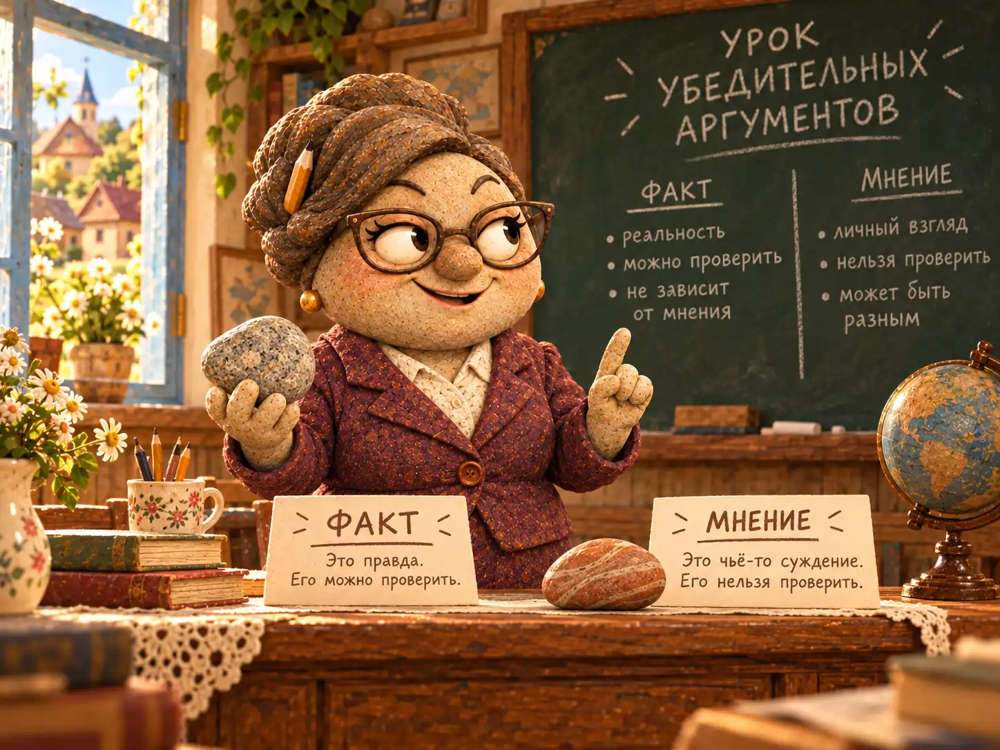
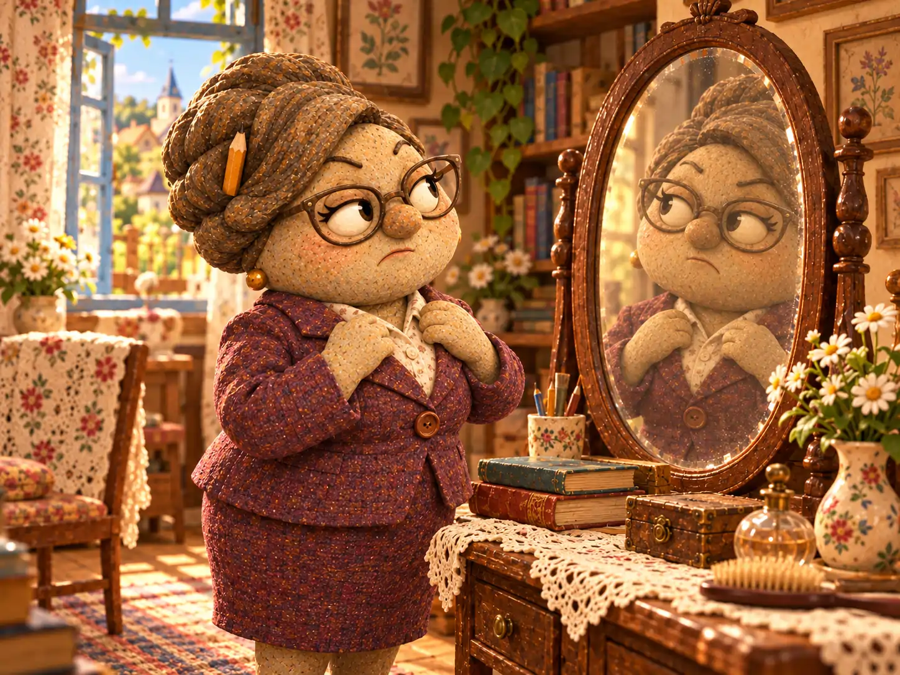
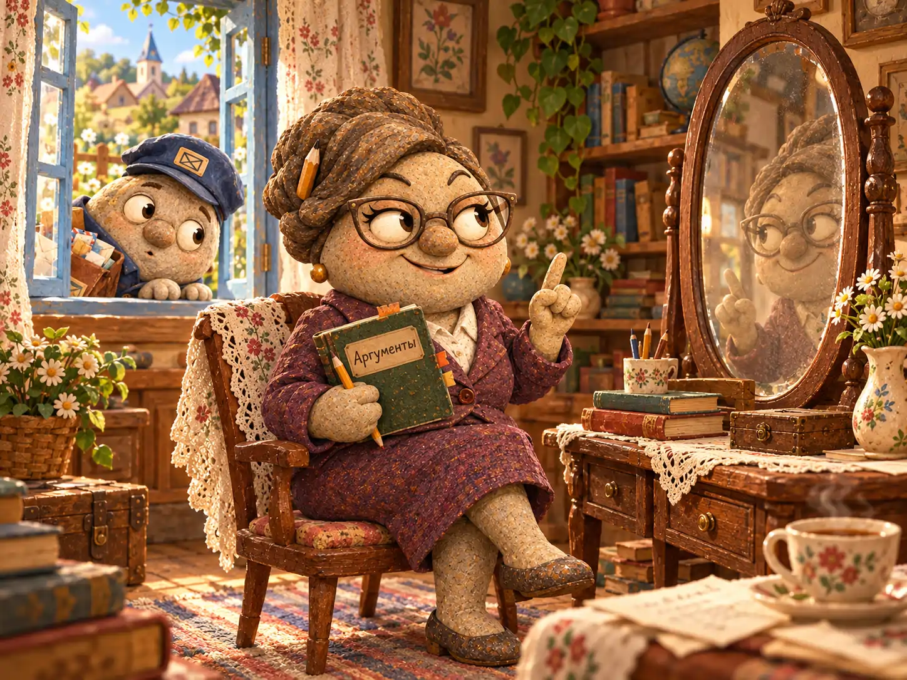
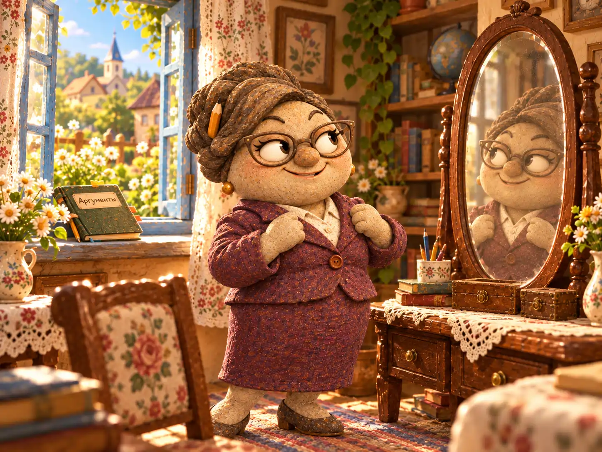

Если в школе Галькино на доске появлялся вопрос, на который не было очевидного ответа, ученики знали: сегодня будет интересный урок. Анфиса Миронова любила не только объяснять правила, но и выяснять, почему эти правила работают.
Утром она учила маленьких каменных жителей складывать числа и расставлять запятые. После обеда помогала разбираться в сложных задачах, а иногда устраивала целые обсуждения. Анфиса считала, что хороший вопрос бывает полезнее ответа, заученного наизусть.
В тот день на уроке речь зашла о разнице между фактом и мнением. Учительница положила на стол два камешка: гладкий серый и рыжеватый, весь в крапинках.
— Этот камень тяжелее, — сказала она, указывая на серый. — Как проверить?
— Взвесить! — ответили ученики.
— Правильно. А если я скажу, что он красивее?
Тут класс задумался. Одному нравились ровные края, другому — необычные пятнышки. Анфиса выслушала всех и довольно кивнула:
— Вот видите. Убедительно говорить — ещё не значит быть правым. Иногда нужно проверить свои слова.
Это было прекрасное правило. Сама Анфиса, правда, пользовалась им не всегда.
В деревне давно заметили её особенность: в любом споре последнее слово оставалось за учительницей. Она не кричала и не сердилась. Просто находила такое объяснение, после которого собеседнику требовалось некоторое время, чтобы снова поверить собственным доводам.
Однажды Прохор Мельников обмолвился, что отдыхать ему некогда. Анфиса так обстоятельно объяснила пользу отдыха, что к концу беседы мельник решил внести отдых в рабочее расписание. Он даже хотел завести для него отдельную тетрадь.
Но с маленькими учениками учительница была терпеливее, чем со взрослыми спорщиками. Если кто-то ошибался, она помогала найти верный ответ. И лишь когда дело касалось её собственного мнения, уступать становилось значительно труднее.

✦ ✦ ✦
Как-то в субботу Таисия Архипова пригласила Анфису на вечерний чай. Они собирались посидеть за книгами, обсудить последние деревенские новости и, возможно, поспорить о том, какую книгу стоит прочитать первой.
После уроков Анфиса вернулась домой, поставила сумку с тетрадями у двери и открыла шкаф. Для визита она выбрала свой любимый бордовый костюм. Ткань была аккуратно выглажена, пуговицы начищены, а в причёске, как обычно, прятался карандаш — на случай, если понадобится что-нибудь записать.
В прихожей висело старое зеркало в деревянной раме. Оно досталось дому ещё до того, как Анфиса стала в нём жить. Стекло немного потемнело по краям, но отражало всё достаточно ясно: и очки, и воротничок, и небольшую складку на рукаве.
Учительница остановилась перед ним, поправила очки и спросила скорее по привычке, чем в ожидании ответа:
— Ну что, как я выгляжу?
Конечно, отражение ничего не сказало. Но Анфиса чуть приподняла бровь, разглядывая воротничок, — и увидела напротив такую же приподнятую бровь.
— Не нравится? — удивилась она. — Странно. По-моему, всё прекрасно.
Она повернулась боком. Отражение тоже повернулось. Анфиса разгладила рукав, и каменная собеседница в стекле повторила движение в точности.
— Между прочим, этот костюм мне очень идёт, — заметила учительница.
В зеркале обнаружился перекосившийся воротничок. Анфиса выровняла его и удовлетворённо кивнула.
— Вот. Теперь уж точно никаких замечаний быть не может.
Но отражение снова слегка нахмурилось — разумеется, вместе с ней.
Анфиса сложила руки на груди. Она пришла к выводу, что зеркало настроено слишком придирчиво и нуждается в серьёзном объяснении.

✦ ✦ ✦
Вместо того чтобы идти к Таисии, учительница принесла из комнаты стул и устроилась напротив зеркала. На подоконник легли блокнот, карандаш и приглашение на чай.
— Начнём с главного. Костюм чистый, выглаженный и подходит для дружеского визита. Согласна?
Отражение внимательно смотрело на неё.
— Отсутствие возражений принимается, — заключила Анфиса и сделала пометку.
Потом она принялась перечислять достоинства своего наряда. Очки сидят ровно. Пуговицы на месте. Цвет костюма хорошо сочетается с оправой. Ни одного серьёзного недостатка.
И тут она заметила на манжете едва различимое белое пятнышко. Утром Анфиса писала мелом на доске и, видимо, задела рукавом её край.
— А вот это уже замечание по существу, — признала она.
Учительница взяла щётку, стряхнула меловую пыль и снова села. Теперь спор, казалось бы, должен был закончиться. Но Анфисе не понравилось, что зеркало так настойчиво обращает её внимание на недостатки.
— Однако один исправленный недочёт не отменяет всех остальных достоинств, — сказала она строго. — И вообще, почему мы рассматриваем только мой внешний вид? Давай оценим твою работу. Посмотри-ка на собственную раму: внизу давно пора стереть пыль.
Так разговор незаметно перешёл от костюма к зеркалу.
В это время мимо дома проходил Тимофей Булыжников. Он нёс почту к площади и услышал из открытого окна знакомый голос:
— Я выслушала твою позицию. Теперь будь добра, выслушай мою!
Тимофей замедлил шаг. В прихожей кто-то оживлённо беседовал, но второго голоса не было слышно.
Почтальон заглянул в окно. Анфиса сидела перед зеркалом с блокнотом на коленях, а на столике рядом лежала щётка для одежды.
— Анфиса, ты с кем разговариваешь? — осторожно спросил он.
— С собеседником, который упорно не желает признавать очевидное.
Тимофей посмотрел на зеркало, потом на Анфису. Он хотел было заметить, что отражения вообще не разговаривают, но вовремя вспомнил её способность превращать короткие замечания в долгие обсуждения.
— Понятно, — сказал он. — Только Таисия уже, наверное, ставит чайник.
Эти слова подействовали лучше любого аргумента. Анфиса взглянула на часы и обнаружила, что до назначенной встречи осталось совсем немного.

Она поднялась, ещё раз посмотрела в зеркало и улыбнулась. Отражение улыбнулось одновременно с ней.
— Ну вот, — обрадовалась Анфиса. — Значит, мы наконец пришли к согласию.
Она подхватила сумку и поспешила к двери.
— А кто из вас победил? — поинтересовался Тимофей.
Анфиса даже остановилась на пороге от удивления.
— Разумеется, я. Последнее слово было за мной.
— Но зеркало ведь ничего не говорило.
— Вот именно! — веско ответила учительница. — Возражений не поступило.
Тимофей несколько секунд обдумывал это объяснение. Он так и не нашёл, что возразить, и решил проводить Анфису до дома Таисии.
✦ ✦ ✦
За чаем Анфиса рассказала о необычном споре. Таисия слушала, придерживая очки, чтобы они не соскользнули с носа, а Тимофей в нужных местах подтверждал, что действительно видел всю заключительную часть.
— Значит, зеркало уступило? — переспросила библиотекарь.
— Безоговорочно, — ответила Анфиса.
— Но разве оно когда-нибудь возражало?
Анфиса задумалась. Потом произнесла так уверенно, что даже Таисия на мгновение засомневалась:
— Возможно, раньше ему просто не попадался достойный оппонент.
Все рассмеялись. Анфиса тоже улыбнулась и потянулась за следующей чашкой чая. Она отлично провела вечер, хотя выбрать книгу для совместного чтения им удалось лишь со второй попытки: тут у учительницы тоже нашлись аргументы.
Наутро она снова подошла к зеркалу. В стекле отразились знакомая причёска, очки и чуть сонное выражение лица.
— Доброе утро, — сказала Анфиса. — Надеюсь, вчерашний разговор пошёл тебе на пользу.
Она подождала мгновение, поправила воротничок и осталась довольна: зеркало не стало спорить.
С тех пор Анфиса уверяла, что в её присутствии оно предпочитает помалкивать. Жители не знали, что думать. Одни считали, что учительница действительно одержала необыкновенную победу. Другие напоминали, что зеркало и прежде не отличалось разговорчивостью.
Но сказать об этом самой Анфисе решались немногие.

Позже в Почтовом архиве Галькино появилась запись:
«Анфиса Миронова вступила в спор с зеркалом и объявила о безоговорочной победе. Свидетель Тимофей Булыжников подтвердил, что последнее слово осталось за учительницей. Мнение второй стороны установить не удалось».
Анфиса прочитала запись и предложила заменить слово «объявила» на «одержала».
Сотрудники архива спорить не стали.